Um portal onde escritórios contábeis agendam competências e um robô que vai buscar, sozinho, os documentos fiscais de cada cliente: XML de NF-e, NFC-e e CT-e na SEFAZ-PB, NFS-e no Portal Nacional, notas destinadas no Ambiente Nacional, guias, certidões e o faturamento dos MEI. Tudo chega organizado em pastas por empresa e competência, no formato que a Domínio importa.
Repositório fiscal26/RPA-de-buscar-XMLBase: main em 23c8d51 (PR 62)Situação em 26/11/2026
web/ · Vercel
Portal
Next.js 15 com Supabase. Login, cadastro de empresas e certificados, agendamento, acompanhamento, Monitor Fiscal, Monitoramento MEI e equipe. Endereço xml.lotivisse.com.br.
web/supabase/schema.sql
Banco
PostgreSQL do Supabase. Tabelas, regras de acesso por escritório (RLS) e as funções que funcionam como filas entre o portal e o robô.
robo/ · VPS Hostinger
Robô
Python com Playwright controlando um Chrome real (ATF) e clientes HTTP com certificado A1 (NFS-e e NF-e). Pega trabalho no banco, executa e devolve o resultado.
servidor/
Instalação na VPS
Serviços systemd (tela virtual, Chrome, robô, worker MEI), envio ao Google Drive por rclone a cada 10 minutos e o comando lotivisse.
As telas desta página foram capturadas do próprio portal rodando localmente com a sessão e as empresas fictícias da suíte de testes (web/tests/fixtures/interface-session.ts.txt). Nenhum dado de cliente aparece aqui.
Por que o sistema existe: a lógica contábil
O trabalho de um escritório contábil se resume a três entregas: escriturar as operações do cliente, declarar ao fisco o que foi escriturado e apurado, e produzir as informações contábeis (balancete, demonstrações, conciliações) que sustentam as decisões do cliente.
As três dependem de um passo anterior que consome boa parte do tempo da equipe fiscal: localizar e reunir os documentos. São notas fiscais espalhadas em portais diferentes (SEFAZ do estado, Portal Nacional da NFS-e, Ambiente Nacional da NF-e), guias, extratos e certidões que precisam ser buscados empresa por empresa, mês a mês, com o login do contador ou o certificado de cada cliente.
O LotiVisse XML automatiza esse passo. O robô faz a busca, confere de qual empresa é cada documento pelo conteúdo do XML e entrega tudo na pasta do cliente e da competência, no caminho que o sistema contábil (Domínio) importa. A equipe deixa de procurar e passa a conferir, escriturar e analisar.
flowchart LR
L["1 · Localizar documentos (o robô faz)"] --> E["2 · Escriturar livros de entradas, saídas e serviços"]
E --> A["3 · Apurar e declarar ICMS, ISS, Simples, retenções, MEI"]
A --> C["4 · Produzir a informação contábil balancete, conciliações"]
C -.->|"divergência encontrada"| L
O ciclo mensal de cada cliente. O sistema atua na etapa 1 e entrega insumos de conferência (extratos, cartão, omissões) que apoiam as etapas 2 a 4.
Documento que o robô traz
Para que a equipe usa
Etapa que alimenta
XML de NF-e de saída, NFC-e e NFS-e emitidas
Registrar as receitas e as saídas; base de cálculo do ICMS, do ISS e da receita bruta do Simples Nacional
Escrituração · apuração · PGDAS-D, EFD
XML de NF-e de entrada e NFS-e recebidas
Registrar compras, custos e despesas; aproveitamento de créditos quando o regime permite
Escrituração · apuração
CT-e (remetente e destinatário)
Fretes contratados e prestados, com o imposto destacado no conhecimento
Escrituração · apuração
NF-e destinadas (Monitor Fiscal)
Encontrar compras emitidas contra o CNPJ do cliente que ele não enviou ao escritório, antes do fechamento do mês
Conferência da escrituração
Relatório de retenções da NFS-e
ISS, IRRF, PIS, COFINS, CSLL e INSS retidos, nota a nota e em totais
Declaração das retenções (EFD-Reinf, DCTFWeb, ISS municipal)
Faturas (DAR em aberto)
Guias do ICMS para pagamento, enviadas ao cliente
Cumprimento da obrigação principal
Extrato de pagamentos
Confirmar o que foi recolhido e contabilizar o pagamento
Informação contábil · conciliação
Omissão e inadimplência · Certidão de débitos
Ver o que a SEFAZ aponta como pendente e comprovar a regularidade do cliente
Controle das declarações e da regularidade fiscal
Conferência cartão de crédito
Cruzar as vendas no cartão informadas pelas administradoras com as notas emitidas, para identificar receita sem nota
Conferência da escrituração
Dossiê MEI e faturamento NFS-e do MEI
Acompanhar o limite anual do MEI e antecipar o desenquadramento
Declaração anual do MEI (DASN-SIMEI) · orientação ao cliente
O sistema localiza e organiza os documentos; a escrituração, a apuração e as declarações continuam sendo feitas e conferidas pela equipe no sistema contábil. As obrigações citadas dependem do regime e da atividade de cada cliente.
Arquitetura
O portal e o robô nunca conversam diretamente. O portal grava o pedido no banco; o robô, num laço contínuo, chama funções do banco que reservam o próximo lote de trabalho (com for update skip locked), executa e grava o resultado. Por isso o robô pode estar num PC ou na VPS, pode cair e voltar, e mais de um robô pode rodar sem pegar a mesma tarefa.
flowchart LR
subgraph U["Escritório contábil"]
N["Navegador (gestor / usuário)"]
GD["Google Drive pasta do escritório"]
EM["Caixa de e-mail"]
end
subgraph V["Vercel"]
P["Portal Next.js xml.lotivisse.com.br"]
CR["Cron diário /api/cron/alertas-mei"]
end
subgraph S["Supabase"]
DB[("PostgreSQL tabelas + RLS + filas RPC")]
AU["Auth"]
end
subgraph VPS["VPS Hostinger · Ubuntu"]
R["robo_xml.py laço principal"]
CH["Chrome :11 / CDP 9223"]
TN["Threads NFS-e e Monitor (4 em paralelo cada)"]
MW["mei_cadastros.py worker a cada 15 s"]
AR[/"arquivos/<Escritório>/..."/]
RC["drive.sh · rclone a cada 10 min"]
end
subgraph EXT["Serviços externos"]
ATF["ATF SEFAZ-PB"]
ADN["ADN NFS-e adn.nfse.gov.br"]
AN["Ambiente Nacional NF-e NFeDistribuicaoDFe"]
CNPJA["CNPJá pública"]
BR["Brevo (e-mail)"]
end
N --> P
P <--> AU
P <--> DB
R <-->|"RPC REST service_role"| DB
R --> CH --> ATF
R --> TN
TN -->|"mTLS A1"| ADN
TN -->|"SOAP mTLS A1"| AN
R --> AR
TN --> AR
AR --> RC --> GD
MW -->|"HMAC"| P
P --> CNPJA
CR --> P
P --> BR --> EM
R -->|"avisa MEI"| P
Fluxo de controle. O robô fala com o banco pela API REST do Supabase (/rest/v1/rpc/...) usando a chave service_role guardada só na VPS.
Peça
Roda em
Acionada por
Entrega
Portal (web/)
Vercel
Pessoa no navegador
Linhas em xml_agendamentos, xml_tarefas, xml_nfe_monitor etc.
Robô, fila SEFAZ
VPS, laço principal + Chrome
xml_pegar_lote a cada intervalo
ZIP/PDF nas pastas, status por tarefa
Robô, fila NFS-e
VPS, thread própria
xml_nfse_reservar_lote
XML, DANFSe, retenções, lote ABRASF
Robô, Monitor Fiscal
VPS, thread própria
xml_nfe_pegar_monitor no horário do escritório
XML + DANFE das NF-e destinadas
Worker de cadastros MEI
VPS, lotivisse-mei-cadastros.service
Timer de 15 s
Chama /api/robo/mei-cadastros (CNPJá)
Alertas MEI
Vercel
Cron 0 11 * * * (8h de Brasília) e o robô após gravar o Dossiê
E-mail pela Brevo
Envio ao Drive
VPS, timer systemd
A cada 10 min
Cópia dos últimos 35 dias para o Google Drive
Vida de uma tarefa
Cada agendamento gera uma tarefa por empresa em xml_tarefas, com a lista de serviços marcados (tipos). Os estados possíveis estão no check da tabela; o detalhe por serviço vai em detalhes (jsonb), que é o que a grade da execução mostra.
Tarefa SEFAZ presa em processando por mais de 90 minutos volta para pendente na próxima chamada de xml_pegar_lote.
Reprocessamento de erros
Botão na tela da execução, ou automático: quando um agendamento termina com 15 ou mais empresas com erro, um gatilho cria um novo agendamento só com os serviços que falharam, marcado para as 22h.
Sinal de vida
O robô grava em xml_robos a cada 30 s (versão, Chrome ok, tarefas em curso). O portal mostra "Robô ligado".
As ferramentas, do acionamento ao recebimento
Cada bloco abaixo segue o mesmo caminho: quem aciona, o que acontece em sequência, onde o resultado chega, a tela correspondente e os pontos que valem uma segunda opinião.
O ATF não entrega XML na hora. A consulta com Tipo de Exibição = XML gera, minutos depois, uma mensagem com o anexo em Minhas Mensagens. O robô trabalha em rodadas de um login de contador (até 15 empresas), envia todas as consultas e depois recolhe as respostas.
Na rotina fiscal: Os XML de entrada, saída, NFC-e e CT-e são a matéria-prima da escrituração dos livros fiscais e da apuração do ICMS. Sem o robô, alguém da equipe entra no ATF, faz a consulta de cada empresa, espera a mensagem e baixa o anexo, um a um.
Acionamento
Gestor em Agendar → SEFAZ do estado: envia a planilha modelo ou escolhe empresas cadastradas, o período e "assim que possível" ou data e hora.
prepararAgendamento lê a planilha no navegador e cifra a senha do ATF com a chave pública do robô; confirmarAgendamento grava logins, empresas e chama xml_agendar_periodo.
A planilha nunca é guardada.
Execução
xml_pegar_lote escolhe um login (de preferência o já aberto no Chrome) e uma competência, e reserva até 15 tarefas.
Login único no ATF; consulta primeiro em HTML (sem notas, nem pede o XML).
Recolha em SEG_064: uma leitura a cada 65 s, até 3 por rodada; pendentes ganham uma última leitura no fim da fila.
Recebimento
Cada ZIP é atribuído à empresa pela IE/CNPJ de dentro do XML, não pela ordem da mensagem.
ZIP fica como veio; o total (vNF das autorizadas) vai no nome da pasta; DANFE/DACTE em PDF/.
Status por serviço em detalhes; tarefa termina como concluido, sem_notas ou erro.
sequenceDiagram
autonumber
actor G as Gestor
participant P as Portal
participant DB as Supabase
participant R as Robô
participant C as Chrome
participant A as ATF SEFAZ-PB
G->>P: planilha + competência + horário
P->>P: cifra senha (RSA-OAEP)
P->>DB: xml_agendar_periodo → tarefas pendentes
loop a cada intervalo
R->>DB: xml_pegar_lote(robô, login aberto, 15)
end
DB-->>R: lote de 1 login, senha cifrada
R->>R: decifra senha (chave privada)
R->>C: login (SEGf_Login.jsp)
loop cada empresa × serviço
C->>A: consulta HTML (há notas?)
C->>A: consulta XML → "resultado na caixa de mensagens"
end
loop até 3 leituras, 65 s entre elas
C->>A: Minhas Mensagens (SEG_064)
A-->>C: anexo "Dados referentes ao ano de ..."
end
R->>R: lê IE/CNPJ do XML e distribui
R->>DB: status + detalhes por serviço
P-->>G: grade da execução atualiza
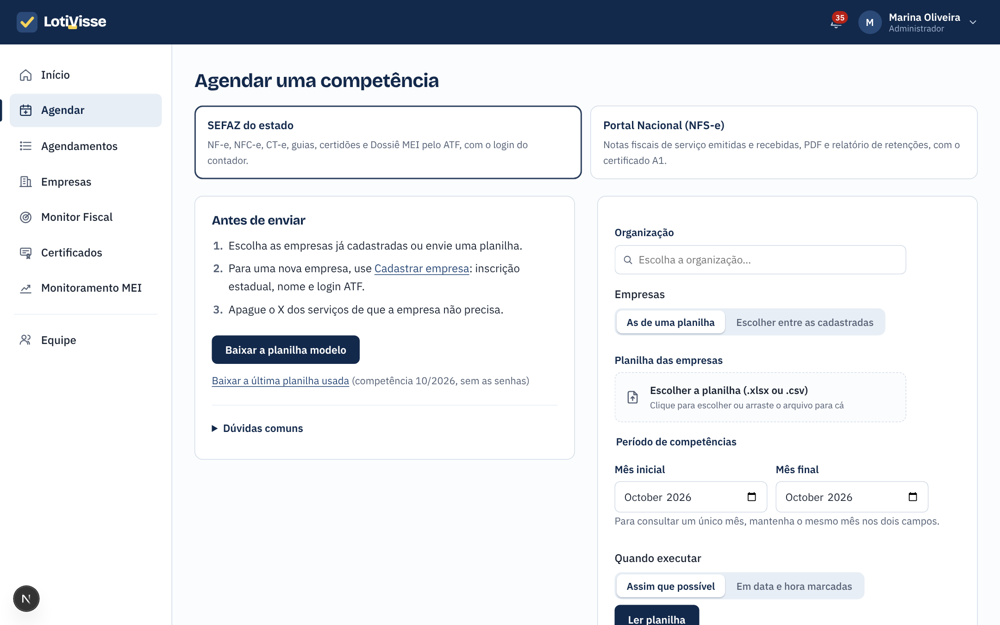
Agendar → SEFAZ do estado. A planilha modelo vem com X em todos os serviços; o cliente apaga o que não quer.
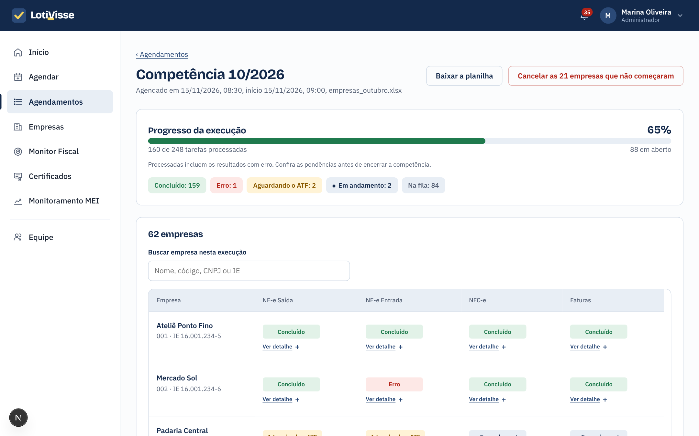
Agendamentos → competência. Progresso geral, contagem por estado e a grade empresa × serviço, com "Aguardando o ATF" para as respostas que ainda não chegaram.
Para revisar
O ATF limita a leitura de mensagens a uma por minuto: a rodada de 15 empresas leva vários minutos e não há como paralelizar no mesmo login.
Senha recusada não é tentada de novo nas outras empresas do mesmo login (risco de bloqueio do contador).
Telas não reconhecidas geram pacote em _diagnostico/ e entram em modo assistido. Vale olhar se o seletor depende de texto que a SEFAZ pode mudar.
O botão Consultar do ATF tem reCAPTCHA; a regra combinada é não automatizar captcha sem discutir antes.
Feitos na mesma sessão do login do contador, enquanto o ATF prepara os XML. Cada tela é aberta pelo campo Função do topo; a IE vai no Número e o Pesquisar confirma a empresa.
Na rotina fiscal: Fecham o mês do cliente na SEFAZ: guias a pagar, o que já foi pago, o que o fisco aponta como omisso e a certidão de regularidade. A conferência do cartão e o Dossiê MEI servem para achar receita sem nota e controlar o limite do MEI.
Serviço
Função ATF
O que o robô faz
Chega em
Faturas
ARR_278
Marca todos os lançamentos espontâneos, menos "DIFERIDO - VALOR MINIMO", e emite (PIX)
Faturas/Faturas AAAA-MM.pdf
Extrato de Pagamentos
ARR_087
Do 1º ao último dia da competência, todos os impostos
Extrato de Pagamentos/
Omissão e Inadimplência
COB_187
Relatório completo
Omissão e Inadimplência/
Certidão de Débitos
DIA_061
Submeter
Certidão de Débitos/
Conferência Cartão
DEC_381
Aba Docs fiscais, link "- Cartão:" e salva a janela em PDF
Conferência Cartão de Crédito/
Dossiê MEI
DEC_381 / DEC_382
Lê Optante SIMEI e início de atividade; guarda a tabela de totais de documentos fiscais por mês
Dossiê MEI/Faturamento MEI AAAA.xlsx e o painel MEI
Acionamento
Mesma tarefa da ferramenta 1: os PDFs e o Dossiê são colunas da planilha (X = emitir).
Execução
O PDF é capturado antes de ir para o visualizador do Chrome; janelas extras são fechadas.
MEI novo: busca também os meses do ano ainda ausentes (de janeiro ou do início da atividade até a competência).
Recebimento
Arquivo repetido não duplica; um novo fica ao lado com "(2)".
Dossiê vai para o banco por xml_mei_registrar e o robô chama /api/robo/alertas-mei para avisar a equipe na hora.
Para revisar
O README ainda marca como pendente a primeira rodada no ATF real dos 4 serviços de PDF. Confirmar se já ocorreu.
Limite MEI usado: R$ 81.000,00 no ano, ou R$ 6.750,00 por mês de atividade no ano de abertura (LC 123/2006, art. 18-A, §§ 1º e 2º). Notas e cartão são acompanhados em separado.
Sem navegador: uma chamada HTTPS com o certificado A1 (mTLS) a adn.nfse.gov.br/contribuintes/DFe/<NSU>?lote=true devolve os documentos a partir do último NSU. Roda numa thread própria, com até 4 empresas ao mesmo tempo, em paralelo com o ATF.
Na rotina fiscal: As NFS-e emitidas compõem a receita de serviços e a base do ISS; as recebidas são custos e despesas. O relatório de retenções reúne o que o tomador reteve e precisa ser declarado e compensado.
Acionamento
Certificados: o .pfx e a senha são cifrados no servidor do portal (v2: AES-256-GCM com a chave embrulhada em RSA) antes de ir ao banco.
Agendar → Portal Nacional: planilha de NFS-e ou empresas cadastradas; serviços emitidas, recebidas, PDF e retenções.
Execução
Ordem do certificado: o da empresa, o da matriz (mesma raiz) e, por fim, o do escritório como procurador (procuração eletrônica, desde 01/11/2026).
Sempre envia cnpjConsulta. 429/5xx esperam e repetem; certificado vencido encerra com certificado.
Reserva por tentativa (tentativa_id): só a tentativa dona pode gravar o resultado.
MEI sem histórico: busca os meses anteriores do ano que ainda não estão no banco.
Recebimento
NFS-e Emitidas/ e NFS-e Recebidas/ com XML e DANFSe (do portal ou gerado do XML).
Retenções NFS-e AAAA-MM.xlsx: ISS, IRRF, PIS, COFINS, CSLL e INSS.
XML único do mês no envelope ABRASF, para a Domínio.
Cache por escritório e CNPJ (robo/armazenamento.py); canceladas ficam fora.
sequenceDiagram
autonumber
actor G as Gestor
participant P as Portal
participant DB as Supabase
participant T as Thread NFS-e
participant ADN as ADN Portal Nacional
G->>P: envia .pfx + senha
P->>DB: certificado cifrado (v2)
G->>P: agenda competência NFS-e
P->>DB: tarefas pendentes
T->>DB: xml_nfse_reservar_lote(robô, 4)
DB-->>T: tarefa + tentativa_id + pfx cifrado
T->>T: decifra A1 só na memória
loop enquanto houver NSU novo
T->>ADN: GET /contribuintes/DFe/NSU?lote=true (mTLS)
ADN-->>T: lote JSON, XML em gzip+base64
end
T->>T: separa emitidas/recebidas, gera DANFSe e retenções
T->>DB: xml_atualizar_tarefa_reservada(tarefa, tentativa, resultado)
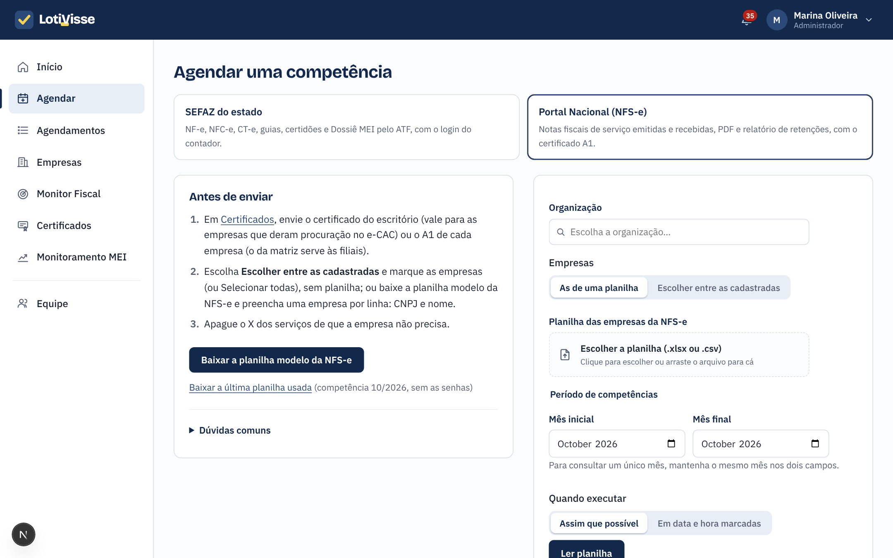
Agendar → Portal Nacional (NFS-e).
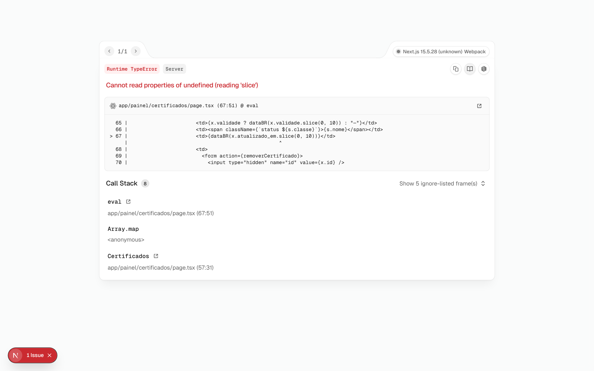
Certificados: A1 por empresa ou do escritório (procurador), com validade.
Para revisar
Ritmo do ADN: começa em ~0,7 s entre chamadas e aumenta em 429. Medir com volume real.
A migração 20261124190000_filas_nfse_compativeis_com_reservas.sql é pré-requisito da reserva por tentativa: sem ela o robô para com "Reserva da fila NFS-e indisponível".
Todo dia, no horário escolhido pelo escritório (padrão 11h de Brasília), o robô consulta o Ambiente Nacional da NF-e com o A1 de cada empresa monitorada e traz as notas em que ela é destinatária, de qualquer estado.
Na rotina fiscal: Mostra as compras emitidas contra o CNPJ do cliente, inclusive de outros estados, mesmo quando ele não envia a nota ao escritório. Reduz nota de entrada fora da escrituração e permite conferir a operação antes do fechamento.
Acionamento
Monitor Fiscal → Adicionar ao monitoramento cria a linha em xml_nfe_monitor.
"Consultar agora" antecipa, respeitando a espera mínima de 1 hora.
A ciência automática liga e desliga por empresa.
Execução
distNSU desde o último NSU. Nada novo ou rejeição 656: próxima consulta só em 1 h.
Nota chega como resumo (resNFe); o robô registra a Ciência da Operação (evento 210210, assinada em XMLDSig) e busca o XML pela chave (consChNFe), até 20 por rodada.
Cadeia ICP-Brasil baixada do ITI e renovada a cada 30 dias.
Recebimento
<MMAAAA>/NF-e Recebidas/<chave>.xml e .pdf (DANFE), no mês da emissão.
Cancelamento (110111) marca a nota e fica em Eventos/.
xml_nfe_concluir grava notas, NSU e quando consultar de novo.
sequenceDiagram
autonumber
participant DB as Supabase
participant T as Thread Monitor
participant AN as Ambiente Nacional
T->>DB: xml_nfe_pegar_monitor (horário vencido)
DB-->>T: empresa + último NSU + A1 cifrado
T->>AN: distNSU(último NSU)
AN-->>T: resNFe (resumo) / procNFe / eventos
alt só resumo e ciência ligada
T->>AN: Recepção de Evento 210210 (Ciência)
T->>AN: consChNFe(chave)
AN-->>T: XML completo (ou ainda não liberado)
end
T->>T: salva XML + DANFE
T->>DB: xml_nfe_concluir(NSU, notas, espera)
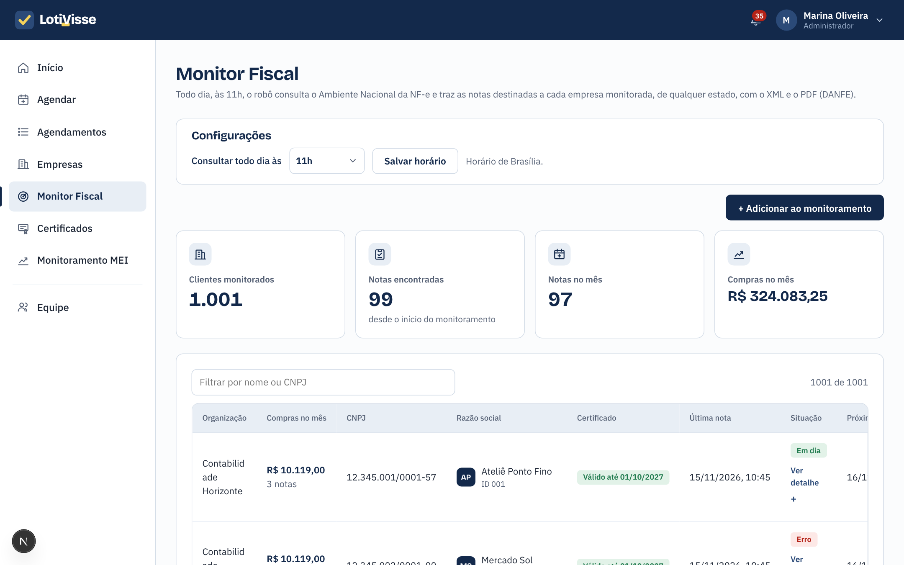
Monitor Fiscal: horário da consulta, totais do mês e situação de cada empresa.
Para revisar
Conexão com a SEFAZ real não tinha sido validada por log até o HANDOFF de 14/11 (só SEFAZ simulada).
Notas presas em "Só resumo": a ciência não foi registrada ou o XML ainda não foi liberado.
NF-e emitidas e NFC-e ficaram de fora: dependem de serviço da SEFAZ de cada estado, e a da PB não oferece.
5. Monitoramento MEI: carteira, faturamento e alertas
Junta três fontes num painel por ano: o Dossiê MEI do ATF (ferramenta 2), as NFS-e emitidas (ferramenta 3) e os ajustes manuais. Mostra quem está dentro, perto ou acima do limite.
Na rotina fiscal: O MEI tem limite anual de faturamento. Acompanhar mês a mês permite orientar o cliente antes do excesso e preparar a declaração anual com os valores já reunidos.
Descoberta da carteira
"Trazer MEIs cadastrados" enfileira os CNPJs da SEFAZ e da NFS-e do escritório.
O worker na VPS chama a rota a cada 15 s com um token HMAC derivado da chave; a rota consulta a CNPJá pública (cache 7 dias, 13 s entre consultas).
Só entra com confirmação explícita; "Ignorar este CNPJ" é persistente.
Faturamento
Mês = maior valor entre notas de saída + NFS-e emitidas e vendas no cartão, mais receitas manuais.
Compras = notas de entrada + compras manuais.
"Sem consulta" é diferente de zero.
Alertas
Cron da Vercel todo dia às 8h de Brasília e logo após o robô gravar um Dossiê.
E-mail transacional pela Brevo à equipe do escritório; também aparece no sino.
flowchart LR
A["Dossiê MEI (ATF)"] --> M[("xml_mei_meses")]
B["NFS-e emitidas (ADN)"] --> N[("xml_mei_nfse_meses")]
C["Ajustes manuais"] --> J[("xml_mei_ajustes")]
M & N & J --> PN["Painel MEI % do limite"]
PN --> AL{"80% ou ritmo de passar?"}
AL -->|sim| BR["Brevo · e-mail"]
AL -->|sim| SI["Sino de notificações"]
W["mei_cadastros.py 15 s"] -->|HMAC| RT["/api/robo/mei-cadastros"] --> CJ["CNPJá"] --> AC[("xml_mei_acompanhamento")]
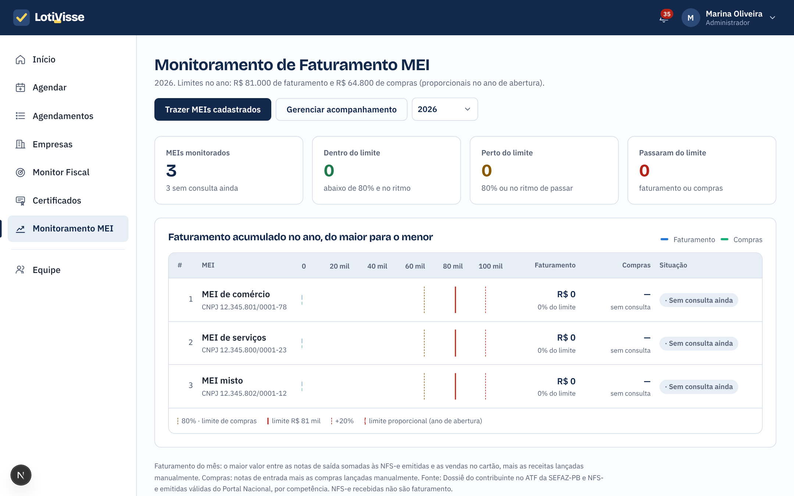
Monitoramento MEI: limites do ano, faixas de 80%, limite e +20%.
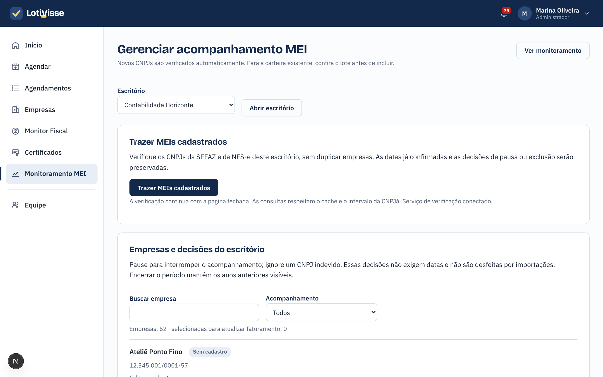
Gerenciar acompanhamento: lote de verificação, confirmação e exclusões.
Para revisar
A rota /api/robo/alertas-mei aceita a chave do robô no cabeçalho; o HANDOFF sugere um segredo próprio (item A6).
Limite da CNPJá é por IP e a Vercel compartilha IP: 429 gera espera global de até 1 h.
servidor/drive.sh · lotivisse-xml-drive.service
6. Entrega: pastas e Google Drive
Todo serviço grava na mesma árvore, uma pasta por escritório. Na VPS a raiz é /home/lotivisse/xml/arquivos; o rclone copia para o Drive a cada 10 minutos.
Na rotina fiscal: É o ponto de recebimento da equipe: cada documento chega na pasta da empresa e da competência, no caminho que o sistema contábil importa. Daí em diante começa a escrituração.
<Escritório>/
Arquivos baixados/
5-joao/ ID-NOME FANTASIA
102026/ MMAAAA, o caminho que a Domínio lê
NF-e Saida - R$ 12.345,67/ ZIP do ATF + PDF/<chave>.pdf
NF-e Entrada - R$ 8.900,00/
NFC-e - R$ 1.230,50/
CT-e Remetente - R$ 400,00/
CT-e Destinatario - R$ 950,00/
Faturas/ · Extrato de Pagamentos/ · Omissão e Inadimplência/
Certidão de Débitos/ · Conferência Cartão de Crédito/
NFS-e Emitidas/ · NFS-e Recebidas/ · Retenções NFS-e 2026-10.xlsx
NF-e Recebidas/ Monitor Fiscal (+ Eventos/)
Dossiê MEI/ Faturamento MEI 2026.xlsx e .json
_sem_empresa/ _nao_identificados/
_relatorios/ _diagnostico/
Regras do envio
Só copia: apagar no Drive não apaga na VPS.
Só arquivos dos últimos 35 dias; arquivos ainda em gravação ficam para a próxima rodada.
Escopo drive.file: o robô só enxerga a pasta que ele criou.
No escritório
A pasta de cada escritório é compartilhada como Leitor.
Google Drive para computador em modo espelho, para a Domínio importar da pasta.
Para revisar
Não há limpeza de disco na VPS (item B1 do HANDOFF). Com 48 GB, definir retenção.
Segurança e cifragem
flowchart LR
PL["Senha ATF na planilha"] -->|"RSA-OAEP-SHA256 prefixo v1:"| DB[("Supabase só texto cifrado")]
PFX[".pfx + senha A1"] -->|"AES-256-GCM, chave em RSA prefixo v2:"| DB
PUB["XML_CHAVE_PUBLICA (Vercel)"] -.-> PL
PUB -.-> PFX
DB --> R["Robô"]
PRIV["robo_privada.pem só na VPS"] -.-> R
R -->|"decifra só na memória"| USO["ATF / ADN / SEFAZ"]
Portal
Só tem a chave pública. Não consegue ler senha nem certificado depois de gravados. RLS separa os escritórios.
Robô
Única peça com a chave privada (RSA 3072). Senha não vai para log nem para o diagnóstico. Ao trocar de login, sai do ATF e apaga os cookies.
Segredos
service_role, BREVO_API_KEY, CRON_SECRET, A1 e a chave privada nunca vão para o Git nem para o chat.
Banco de dados
Tudo está em web/supabase/schema.sql, reaplicável sem perder dados. As migrações em web/supabase/migrations/ precisam ser rodadas no SQL Editor; a Vercel não aplica SQL.
xml_pegar_lote e xml_nfse_pegar_lote aparecem redefinidas várias vezes no schema.sql (as versões posteriores substituem as anteriores). Vale consolidar.
Galeria de telas
Capturas a 1440 × 900 com dados fictícios. O botão "N" no canto é o indicador do Next.js em modo de desenvolvimento e não aparece em produção.
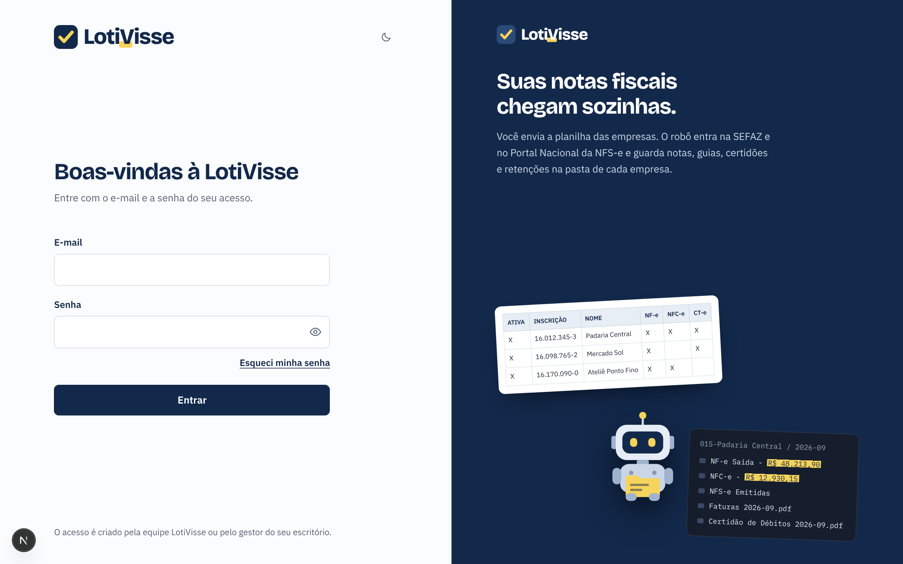
Login
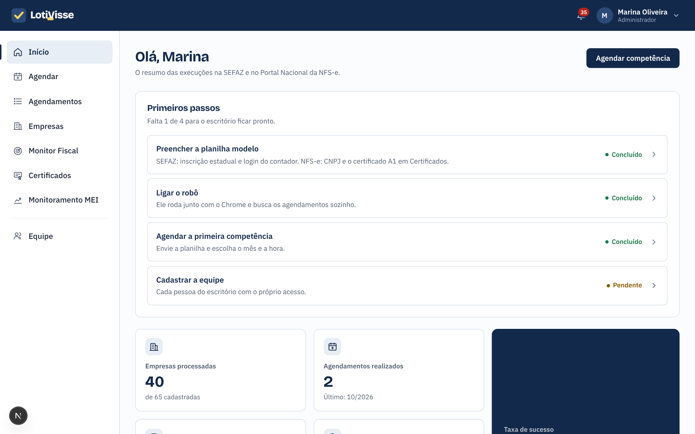
Início: primeiros passos e números do escritório
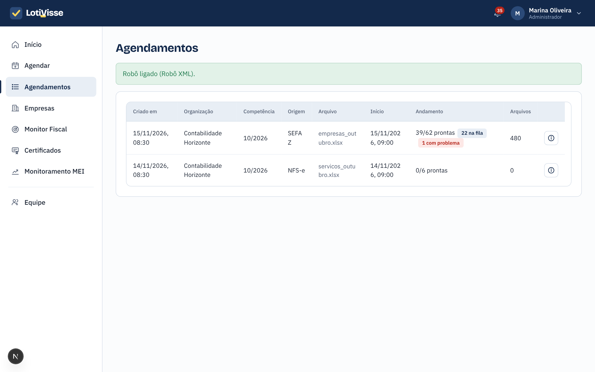
Agendamentos
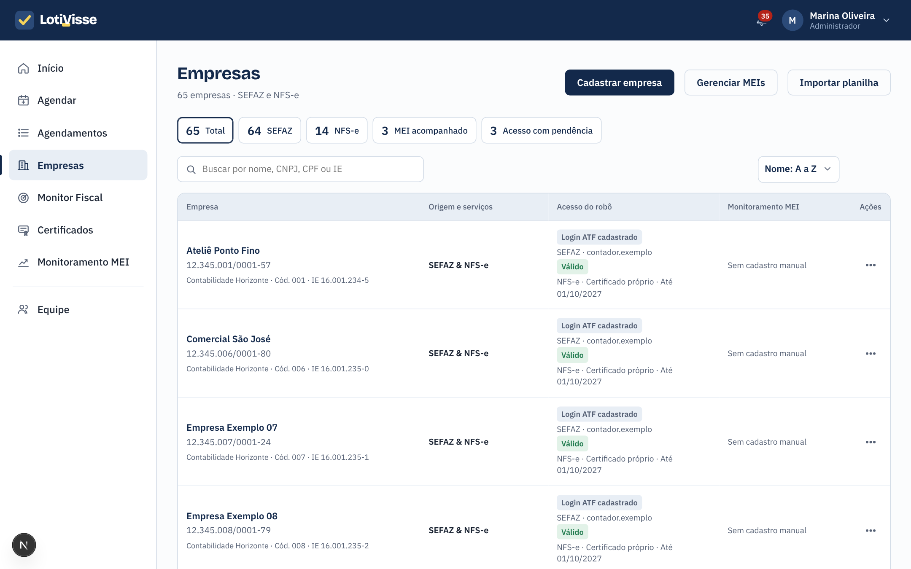
Empresas
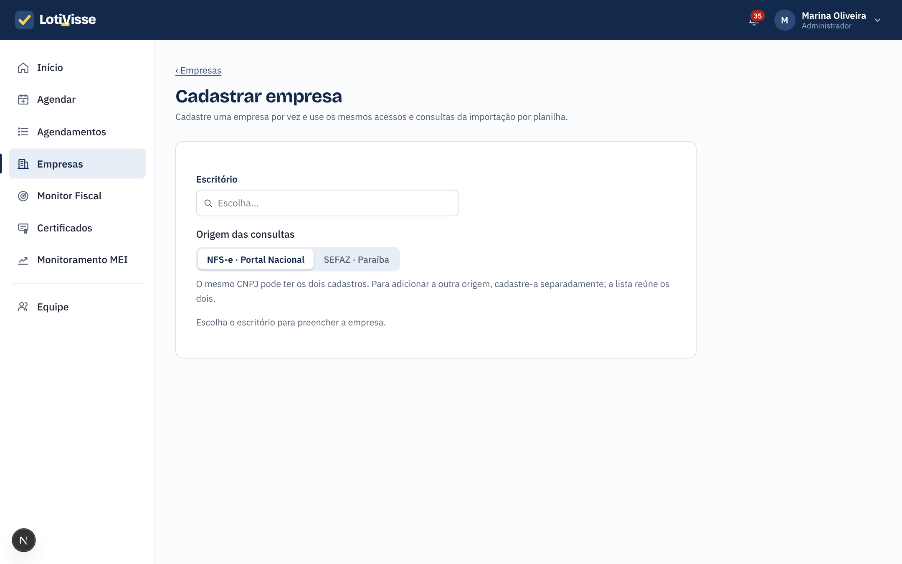
Cadastrar empresa (sem planilha)
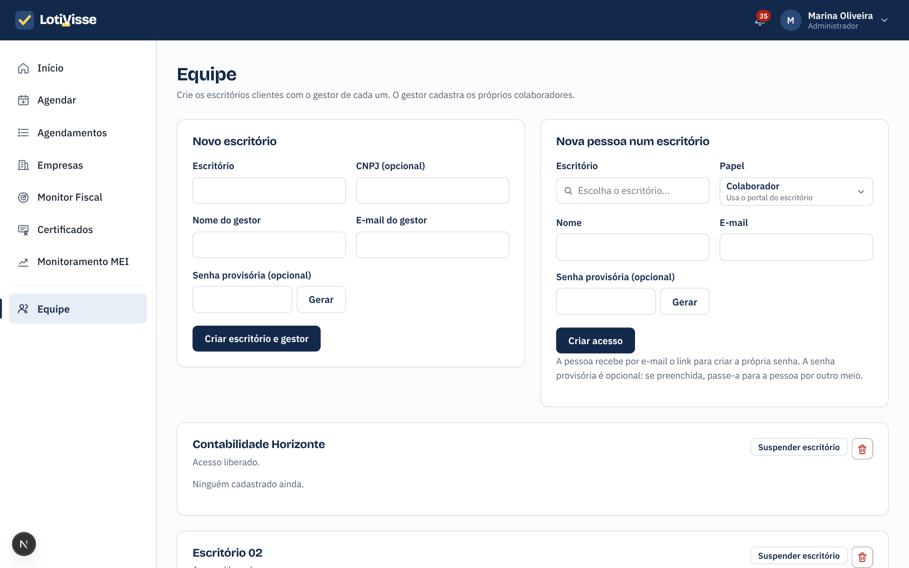
Equipe
Mapa do código
Arquivo
Linhas
Responsável por
robo/robo_xml.py
1558
Laço principal, classe Portal (chamadas ao banco), Executor do ATF, executar_nfse, executar_monitor, filas paralelas, modo --local
robo/atf_pb.py
1658
Automação das telas do ATF, recolha em Minhas Mensagens, Dossiê MEI
NFeDistribuicaoDFe, Ciência da Operação, DANFE, ICP-Brasil
robo/arquivos.py
738
Distribuição pelo conteúdo, nomes das pastas, totais
robo/armazenamento.py
336
Cache e travas por escritório/CNPJ
robo/navegador.py, gravador.py
279 / 308
Chrome via CDP; gravador de passos para calibrar telas
robo/cripto.py · web/lib/cripto.ts
91
Cifragem v1 e v2 dos dois lados
web/app/painel/actions.ts, actions-nfse.ts
Server actions de agendamento e certificados
web/lib/planilha*.ts
Leitura da planilha modelo (SEFAZ e NFS-e)
web/supabase/schema.sql
~2400
Tabelas, RLS, filas
servidor/instalar.sh, drive.sh, instalar_mei.sh
Instalação e serviços da VPS
Como rodar os testes
Robô: cd robo && python -m pytest -q tests. Os rápidos levam ~10 s; o ATF simulado (test_atf_simulado.py) leva ~18 min e usa Chromium.
Portal: cd web && npm ci && npm run typecheck && node --test tests/*.test.cjs.
Interface: npm run test:interface (cópia temporária, sessão fictícia, axe).
Banco: testes com PGlite em tests/*-db.test.cjs.
Sem portal: robo_xml.py --local empresas.xlsx --competencia 09/2026.
Comandos da VPS
sudo lotivisse status|log|atualizar|configurar|ver-tela xml
systemctl status lotivisse-xml-drive.service
sudo systemctl status lotivisse-mei-cadastros
Chrome do robô de XML: tela :11, CDP 9223, VNC 5901 (certidões usa :10 / 9222 / 5900).
Pauta de revisão
Itens da auditoria registrada no HANDOFF.md (14/11/2026) e pontos observados na leitura do código. Alguns podem ter sido resolvidos nos PRs seguintes; vale conferir cada um antes de priorizar.
Área
Ponto
Prioridade sugerida
Segurança
Robô usa a chave service_role: criar um papel restrito só com as RPCs que ele chama (A1)
Alta
Segurança
Cadeia ICP-Brasil baixada por HTTP sem verificação de integridade (A2)
Alta
Segurança
MFA, CI com proteção do main, versões Python fixas (A3–A5)
Média
Segurança
Segredo próprio para /api/robo/alertas-mei; /sair por GET; CSP com nonce (A6, A8, A9)
Média
Operação
Alerta de robô parado e limpeza de disco na VPS (B1, B2)
Alta
Operação
Monitor Fiscal validado só contra SEFAZ simulada; pedir log real (B8)
Alta
Operação
Primeira rodada real dos 4 serviços de PDF do ATF
Média
Código
robo_xml.py e atf_pb.py passam de 1.500 linhas cada; separar filas, executor e cliente do portal
Melhoria
Código
Funções de fila redefinidas várias vezes no schema.sql
Melhoria
LGPD
Política de Privacidade e Termos, trilha de auditoria, retenção dos arquivos (C1–C3)
Média
Infra
Vercel Hobby para uso comercial; backups do Supabase; portas VNC/CDP fechadas (D)
Média
Regras combinadas com a dona do projeto
Sem force-push; merge só com aprovação explícita; nada de merge automático.
Captcha não é automatizado sem discussão prévia.
A planilha enviada nunca é guardada (contém senhas).
Explicações em português simples, com os passos exatos: a usuária é da área contábil e tributária.